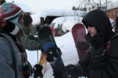
Гуляющие человеки:
Ксения Дронова (Volkl), Антон Климов (Canon),
Игорь Верташ (Burton),
Алексей Белокрылов (Elan)
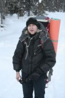
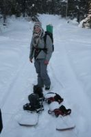
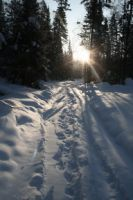
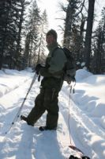
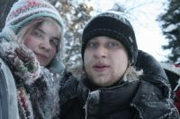
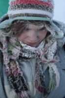
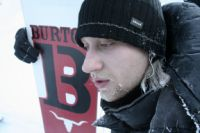
Мороз - если не 30, то 25 точно! в январе так не примораживало!
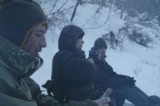
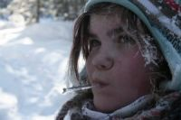
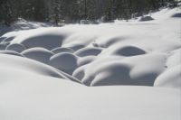
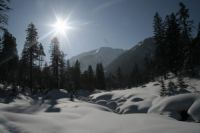
Зимовье пустое, поживем в нем. В кунге большая компания, однако почти все
двинули на Три Березы. Мы же решили сходить на Лесной, где все было не
катаное. Одна проблема - тропы нет. Но что нам стоит затропить по плотному снегу, да при хорошей погоде :) |
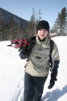
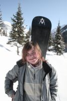
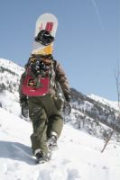
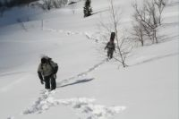
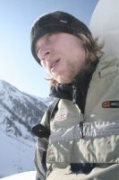
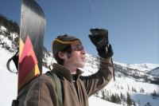
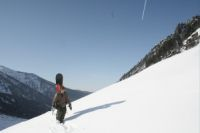
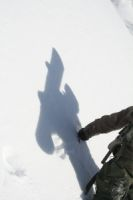
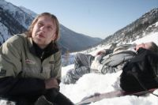
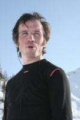
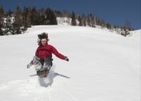
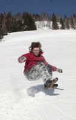
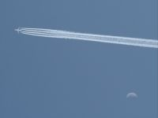
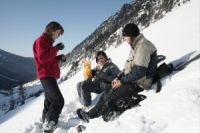
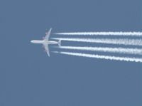
Однако поздний выход после обеда, праздничное настроение и местами неожиданно
глубокий снег на гребне сделали свое дело - немного не дошли до самого верха,
солнце село и стало примораживать. Пора домой, завтра дотропим. Катанули
немного по гребню между елок, потом ушли в центральный кулуар Лесного. |
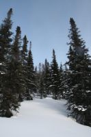
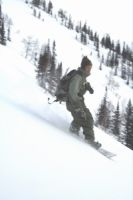
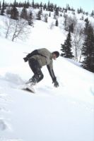
Немного подождали Антона, он спускался по тропе, на фотоаппаратах с горы
не ездят :) Верт впервые на целине, накувыркался :) Ксюша последний раз
каталась на Мамае год назад, хотя раньше бывала намного чаще.
А как она вкусно готовит сайровый супчик - никто так не умеет :)
Это еще не все фотографии!
Прыжки с трамплина в свежий снег смотрите здесь ... |
Текст: Алексей Белокрылов
Фото: Антон Климов